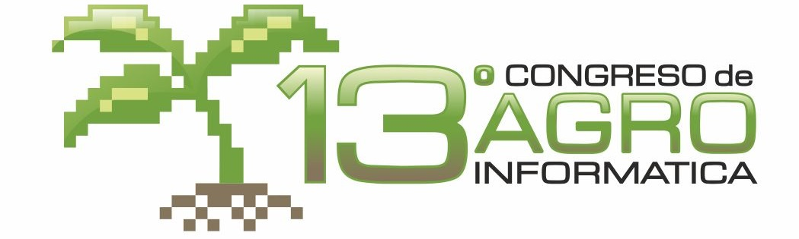

Llamado a presentación de trabajos - Chamada de Trabalhos - Call for papers
El 13º Congreso Argentino de AgroInformática (CAI-2021) convoca a investigadores, tecnólogos, desarrolladores, emprendedores y empresas relacionadas al sector agroindustrial a enviar trabajos relativos a las TICs aplicadas a problemáticas agropecuaria, agroindustrial y medio ambiental, abarcando desde instancias experimentales a comerciales.
El sector agroindustrial necesita más y mejores soluciones tecnológicas a sus problemas propios y aquellos derivados de los cambios económicos y climáticos, soluciones que a su vez pueden ser útiles a otros países. Muchas de las soluciones a estos problemas, emergen del contacto entre investigadores, empresarios, emprendedores y estudiantes cuyas ideas y desarrollos se complementan.
Tópicos de interés
Los temas sugeridos, con aplicación específica a problemáticas agropecuaria, agroindustrial y medio ambiental, aunque no excluyentes, son los siguientes:
· - Software y sistemas de información agropecuarios.
· - Modelización de sistemas de producción.
· - Integración y trazabilidad de cadenas agro-industriales.
· - Geomática, Sistemas de Información Geográficos, IDEs, Teledetección y Observación Terrestre.
· - Robótica agro-industrial.
· - Agricultura y ganadería de precisión.
· - Redes de sensores en cultivos, tambos, feed-lots y plantas de procesamiento.
· - Sistemas embebidos y desarrollos electrónicos en la agro-industria.
· - Monitoreo y control medio ambiental.
· - Ontologías, Big Data, Open Data, DataMining e inteligencia artificial aplicadas al agro.
· - Bioinformática y registros biológicos.
· - Servicios Web Agroindustriales y Web 2.0.
· - Nuevos desarrollos y experimentos en AgroTICs.
· - Aplicaciones móviles.
· - Internet de las cosas aplicadas al agro.
· - Experiencias educativas en TICs aplicadas al agro.
Categorías de Trabajos y Formatos Solicitados
Los trabajos que se envíen deben estar relacionados con las temáticas de referencia y presentar resultados de tareas de investigación, estados de avance o desarrollos específicos. Ya sea por su originalidad o potencial aplicación e impacto en la agroindustria o el sector público, los trabajos deben ser del interés de los distintos actores de la innovación tecnológica y la producción. Se aceptarán los siguientes tipos de trabajos:
- Full papers: trabajo con aportes originales y/o innovadores, con una extensión máxima de 14 páginas. Deberá contener los siguientes puntos:
- Título Debe ser representativo del contenido, en lo posible no mayor de 10 palabras. Utilizar las mayúsculas sólo para nombres propios y para inicio de oración. Si es necesario, puede agregarse un subtítulo de longitud similar.
- Autores: Nombre y apellido, filiación institucional, ciudad, país, y dirección de correo electrónico de cada autor.
- Resumen de hasta 200 palabras.
- Incluir no menos de tres y no más de cinco palabras clave en el idioma del texto.
- Introducción
- Cuerpo del trabajo: se sugiere materiales y métodos, resultados, discusión
- Conclusiones
- Anexos (si corresponde)
- Bibliografía (No agregar a la bibliografía textos que no se hayan citado o mencionado en el trabajo)
- Short papers: Trabajo con aportes originales y/o innovativos, que no amerite la redacción de un trabajo extendido, con una extensión máxima de 4 páginas Deberá contener los siguientes puntos:
- Título. Debe ser representativo del contenido, en lo posible no mayor de 10 palabras. Utilizar las mayúsculas sólo para nombres propios y para inicio de oración. Si es necesario, puede agregarse un subtítulo de longitud similar.
- Autores.Nombre y apellido, filiación institucional, ciudad, país, y dirección de correo electrónico de cada autor.
- Resumen de hasta 200 palabras.
- Incluir no menos de tres y no más de cinco palabras clave en el idioma del texto.
- Introducción
- Cuerpo del trabajo: se sugiere materiales y métodos, resultados, discusión
- Conclusiones (puede contener una sección de trabajos futuros)
- Anexos (si corresponde)
- Bibliografía (No agregar a la bibliografía textos que no se hayan citado o mencionado en el trabajo)
- Data papers: El objetivo de esta categoría es presentar conjuntos de datos generados para investigaciones que sean relevantes al simposio centrándose específicamente en describir el conjunto de datos y su accesibilidad. Para los autores se proporciona un medio para acreditar a los creadores de los datos a través de citas y revisión por pares además de contribuir con la apertura de datos y el reuso de los mismos. Proporciona a los autores con la posibilidad de poder dar crédito, a los creadores de los datos, a través de citas y revisión por pares y, además, contribuir con la apertura de datos y el reuso del set de datos Debe contener los siguientes puntos, con una extensión máxima de 14 páginas:
- Título Debe ser representativo del contenido, en lo posible no mayor de 10 palabras. Utilizar las mayúsculas sólo para nombres propios y para inicio de oración. Si es necesario, puede agregarse un subtítulo de longitud similar.
- Autores: Nombre y apellido, filiación institucional, ciudad, país, y dirección de correo electrónico de cada autor.
- Resumen de hasta 200 palabras.
- Incluir no menos de tres y no más de cinco palabras clave en el idioma del texto.
- Introducción
- Cuerpo del trabajo: El trabajo debe proporcionar detalles como i) el contexto de la recopilación de datos, ii) la elección del entorno de software, iii) las decisiones de procesamiento de datos, iv) los formatos de archivo, v) la actualización de los datos y vi) licencia de uso y forma de acceso.
- Anexos (si corresponde)
- Bibliografía (No agregar a la bibliografía textos que no se hayan citado o mencionado en el trabajo)
- Extended abstracts: resumen extendido que proporciona una oportunidad para que investigadores y profesionales presenten y discutan sus más recientes avances, ideas, investigaciones en curso, experiencias y desafíos en la temática. Tendrá una extensión máxima de 2 páginas, incluye los siguientes puntos:
- Título. Debe ser representativo del contenido, en lo posible no mayor de 10 palabras. Utilizar las mayúsculas sólo para nombres propios y para inicio de oración. Si es necesario, puede agregarse un subtítulo de longitud similar.
- Autores: Nombre y apellido, filiación institucional, ciudad, país, y dirección de correo electrónico de cada autor.
- Cuerpo del trabajo: resumen extendido, puede incluir una figura.
- Incluir no menos de tres y no más de cinco palabras clave en el idioma del texto.
- Bibliografía (si la hay; no agregar a la bibliografía textos que no se hayan citado o mencionado en el trabajo)
Para los cuatro tipos de trabajos, las obras presentadas no deben haber sido publicadas con anterioridad, ni ser objeto de revisión en otra conferencia, simposio o revista. Los cuatro tipos de trabajo se incluirán en los proceedings del congreso.
Demostraciones: Las Demostraciones presentarán resultados de proyectos de investigación (y así obtener retroalimentación de potenciales usuarios), así como de desarrollo de aplicaciones o procesos particularmente innovadores en empresas privadas o por profesionales independientes (y así intercambiar experiencias adquiridas en la práctica). Estos trabajos se incluirán en los proceedings del congreso.
- Título. Debe ser representativo del contenido, en lo posible no mayor de 10 palabras. Utilizar las mayúsculas sólo para nombres propios y para inicio de oración. Si es necesario, puede agregarse un subtítulo de longitud similar.
- Autores: Nombre y apellido, filiación institucional, ciudad, país, y dirección de correo electrónico de cada autor.
- Cuerpo del trabajo: resumen extendido de hasta 2 páginas (puede incluir una figura) donde se detalle: acerca de una aplicación o proceso que incluya: una descripción sintética y sus objetivos, problemas que resuelve, audiencia de usuarios a los que está destinada, y tecnología utilizada y (ii) una URL de una versión de la demo si corresponde, si ésta se puede ejecutar en línea o, alternativamente una dirección URL con un video que muestre las principales características de la misma.
- Incluir no menos de tres y no más de cinco palabras clave en el idioma del texto.
- Bibliografía (Si la hay; no agregar a la bibliografía textos que no se hayan citado o mencionado en el trabajo)
Comunicaciones orales: se reciben trabajos ya presentados en un congreso internacional o publicado en una revista de relevancia durante los años 2018 a 2020 cuya extensión no exceda una página. Las Comunicaciones Orales aceptadas tendrán un espacio para su exposición en el programa del congreso, con el objetivo de difundir en el ámbito nacional trabajos ya publicados en el ámbito internacional. Cabe aclarar que, debido a que dichos trabajos ya han sido publicados previamente, los proceedings del congreso sólo incluirán los abstracts de los mismos.
- Título. Debe ser representativo del contenido, en lo posible no mayor de 10 palabras. Utilizar las mayúsculas sólo para nombres propios y para inicio de oración. Si es necesario, puede agregarse un subtítulo de longitud similar.
- Autores: Nombre y apellido, filiación institucional, ciudad, país, y dirección de correo electrónico de cada autor.
- Resumen extendido de hasta 1 página (puede incluir una figura). Debe incluir los datos de la publicación original (evento/revista, fecha, acceso url o DOI)
- Incluir no menos de tres y no más de cinco palabras clave en el idioma del texto.
- Bibliografía (Si la hay; no agregar a la bibliografía textos que no se hayan citado o mencionado en el trabajo)
Los trabajos deberán estar escritos en castellano, portugués o inglés y deben cumplir con el formato LNCS (Lecture Notes in Computer Science). Se deberá utilizar la plantilla provista por Springer, la misma puede descargarse aquí.
Todos los trabajos deberán enviarse en formato PDF, sin autores y sin filiación hasta tanto finalice el proceso de revisión. Los resúmenes deberán tener espacio suficiente para incluir, en su versión final, los autores y su filiación. El envío de trabajos a cualquiera de los simposios de las 50 JAIIO se hace por medio del sistema de gestión de conferencias de SADIO. Para enviar su trabajo necesita estar registrado (o registrarse) y acceder al sistema. Para resolver cualquier duda, tiene a su disposición las instrucciones para obtención de credenciales y acceso al sistema de envío de trabajos. Los trabajos serán revisados cuidadosamente por los miembros del Comité Científico, teniendo en cuenta su originalidad, aporte, calidad técnica y claridad.
Al menos uno de los autores de los trabajos aprobados deberá estar registrado en la conferencia con anterioridad a la fecha límite para la presentación definitiva de trabajos (camera ready) a fin de que el mismo sea incorporado en los proceedings del evento. Además es requisito presentarse en la fecha y horario indicados para la exposición del trabajo. Tenga en cuenta que el trabajo cuyo autor no asista a exponerlo será retirado de los proceedings. En caso de fuerza mayor el autor podrá enviar a un representante (debidamente autorizado) para que lo exponga en su nombre.
Chairs del Simposio
- Romina Mezher (INTA Clima y Agua, Argentina)
- Javier Berger (Escuela de Robótica de Misiones)
- Sandro Camargo (UNIPAMPA)
- Yanina Bellini Saibene (INTA Anguil, Argentina)
Comité Científico del Simposio
- Mónica Alonso
- Marcos Angelini
- Mauricio Arroqui
- Santiago Banchero
- Naylor Bastiani Perez
- Yanina Noemi Bellini Saibene
- María Laura Belmonte
- Javier Eduardo Berger
- Maicon Bernardino da Silveira
- Leonardo Bidese de Pinho
- Mónica Bocco
- Édson Luis Bolfe
- Lucas Emmanuel Bonelli
- Juan Marcelo Caldera
- Matias Cambareri
- Flavio Andrés Capraro Fuentes
- Marcos Carrasco-Benavides
- Mauricio Castro Franco
- Cristian Cechinel
- Leandro da Silva Camargo
- Sandro da Silva Camargo
- Joao Carlos Damasceno Lima
- Mario José Diván
- Roberto Dos Santos Rabello
- Juan Edwards Molina
- Mauricio Anibal Farrell
- Maria de los Angeles Fischer
- Liliana Franco
- María Elena Fuentes
- Daniel Funaro
- Natalia Noemí Gattinoni
- Adriana Gili
- Ricardo Guimaraes Andrade
- Érico Marcelo Hoff do Amaral
- Juana María López
- Gerson Alberto Leiria Nunes
- Andrea Lopes Iescheck
- Marcelo Lopez de Sabando
- Héctor Oscar Lorda
- Roberto Mariano
- Cristian Maximiliano Mateos Diaz
- Romina Nahir Mezher
- Priscilla Minotti
- Evangelina Miqueo
- Andres Moltoni
- Luciano Moraes da Luz Brum
- Natalia Morandeira
- Elke Noellemeyer
- Miguel Nolasco
- Adrian Oscar Orellana
- Gustavo Gabriel Ovando
- Willingthon Pavan
- Claudio Perez
- Bruno Pugliese
- Mariela Rajngewerc
- Juan Manuel Rodriguez
- Juan Ruiz
- Andrea Sabedra Bordin
- Hana Karina Salles Rubinsztejn
- Sergio Luis Sardi Mergen
- Silvina Sayago
- Alexandro Gularte Schafer
- Andrés Sipowicz
- Micaela Stazionati
- Santiago Tosetti
- João Francisco Valiati
- Rogerio Vargas
- Comité Organizador
- Francisco Etchart (INTA Anguil)
- Juan Caldera (INTA Anguil)
- Andrea Lagomarsino (INTA Anguil)
- María Elena Fuentes (INTA Anguil)
Para información y contacto
Mail: cai@50jaiio.sadio.org.ar
Web: 50jaiio.sadio.org.ar/simposios/cai
Twitter: @cai_sadio | @sadio_oficial | @jaiio_oficial #CAI2021 #AgTech